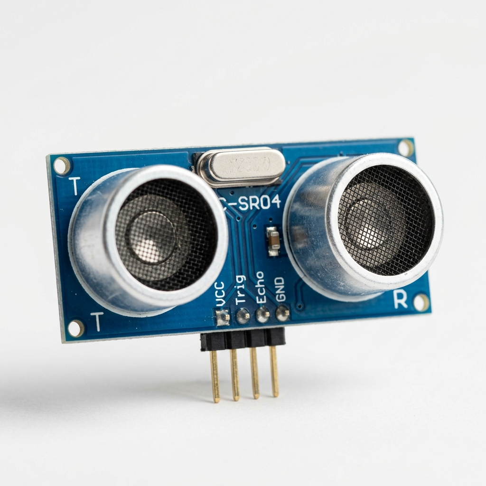

HC-SR04
Categoria: Distância / Proximidade
Conceito
O HC-SR04 é um módulo emissor/receptor que utiliza ondas sonoras de alta frequência para medir, sem contato físico, a distância entre o sensor e um objeto à sua frente.
Princípio de Funcionamento
Funciona pelo princípio de ecolocalização. O transmissor (Trig) envia um pulso ultrassônico (40 kHz) que viaja pelo ar, bate no obstáculo e retorna. O receptor (Echo) capta o sinal e calcula o tempo de voo (Time of Flight). A distância é obtida multiplicando o tempo pela velocidade do som.
Principais Especificações Técnicas
- Tensão de operação: 5V DC
- Corrente de operação: 15mA
- Faixa de detecção: 2 cm a 400 cm
- Precisão: ~3 mm
- Ângulo do feixe: 15 graus
Aplicações Industriais ou IoT
Medição de nível de líquidos em tanques e silos (que não geram espuma), sistemas anti-colisão em veículos autônomos industriais (AGVs) e controle de presença em esteiras.
Exemplo em um Projeto
Monitoramento de Nível de Caixa D'água: O sensor é instalado na tampa da caixa. Ao calcular a distância até a lâmina d'água, o microcontrolador sabe o volume restante. Caso o nível baixe criticamente, uma bomba de água é acionada via relé.